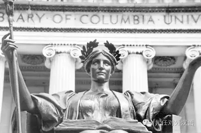
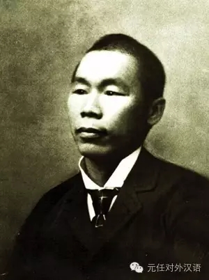
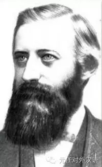
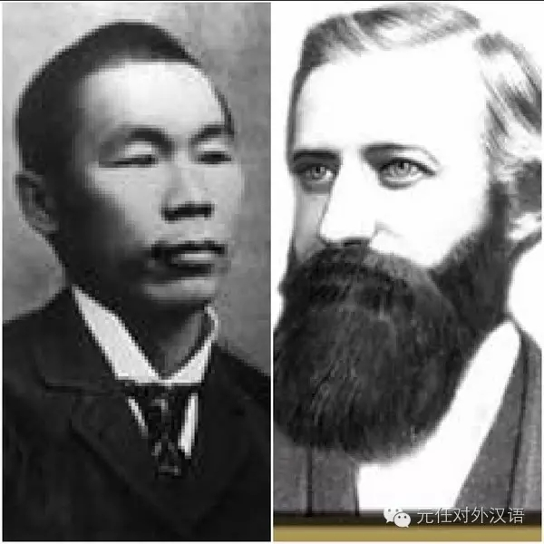
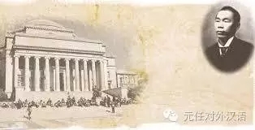
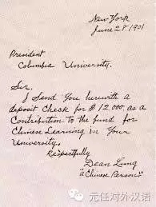
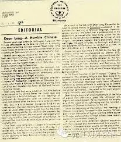

涨姿势 | 美国最早的汉学系是由一个佣人创建的?!做对外汉语一定要知道他啊！！
 5,317
5,317
你一定知道在纽约，有一所世界顶级的学府叫哥伦比亚大学（Columbia University).

是的，没错，就是奶茶妹妹和王力宏李云迪媳妇儿呆的地儿。
作为对外汉语人，如果对哥大的了解只停留在网红八卦的认知层面的话，那，不好意思。容祖师爷默默翻一次野生白眼。
哥大有全美最早的东亚系。这块遥遥领先的高地孕育了全美最早的汉学系，在中华文化的输出和传播史上有着丰碑级别的意义。1910年到1930年间，胡适之，冯友兰，徐志摩，宋子文，陶行知，闻一多等耳熟能详的大神都曾在这里求学进修。
好了，贴了那么多标签，只想说，哥大的东亚系，在这个星球上闪耀着高大上的光辉！
而这一切成就和影响力的背后，有一位至关重要却鲜为人知的人物-–丁龙。
谁是丁龙？

丁龙 （Dean Lung），广东人，南北战争时期（清末年间）被运往美国的苦命劳工，最早期的中国移民。在大资本家卡朋蒂埃做侍从，后因做事扎实靠谱又懂书写，被卡朋蒂埃任命为自己的贴身管家。
谁是卡朋蒂埃？

卡朋蒂埃（Horace Walpole Carpentier） ，出生在纽约市下城区（Galway）的普通皮匠家庭，天赋异禀，考上了精英云集的哥伦比亚大学。卡朋爸看儿子这么有出息，竭其所能资助儿子接受高等教育，卡朋蒂埃也非常争气，成绩卓越，并成为了当年毕业典礼的优秀学生代表，进行毕业演讲。
当年正值“淘金热”（Gold Rush），大量资本家都纷纷前往旧金山，走上淘金之路。这位颇具胆识的小年轻并没有跟随潮流，而是剑走偏锋，只身来到还未开发的美国西海岸。并自命为这块处女地的市长。在这块土壤上，自行修建学校，码头，船港并收取当地人费用（万恶的资本家啊！！）。
从此，西海岸一座叫做奥克兰的城市诞生了，卡朋蒂埃便是奥克兰的第一任市长。
丁龙和卡朋蒂埃之间发生了什么故事？

卡朋蒂埃是脾气火爆的霸道总裁，(目测不是狮子就是白羊座)。
尤其是喝了酒之后，这个 angry drunk 吼走侍从也不是一次两次。有一次卡朋又喝大了，发脾气的老毛病又犯了，这次病得不轻，不仅作走了所有的侍从，还非要赶走自己的贴身管家丁龙。
第二天，酒醒的卡朋同志，看着空荡荡的家，内心有些落寞。他孤独地下楼去找吃的。
万万没想到，丁管家不仅没有丢下他，还像往常一样，为他准备好了醒酒早餐。
此刻，卡朋总裁的内心戏是这样的
（啊啊啊啊啊！丁管家，哈哈！你还在啊！mua~）ლ（´∀`ლ）
卡朋略羞愧地问管家“老丁，我脾气那么坏，你为什么不生气，为什么依然再我身边呢？“(T_T)
丁管家淡淡地说：总裁啊，你虽然脾气是坏了点，但你其实是个好人（被发好人卡）。而且我们中国人讲究孔子的忠恕之道，以德报怨，我跟了您那么久，您的脾性我也是知道的。”(⊜‿⊜✴）
卡朋听后，深深被中国人的“以德服人”打动了。并和丁管家探讨起关于“孔子”的话题。丁管家说，自己没怎么读过书，自己家里人也没有识字的。但孔子说的“忠”，“恕”都是普通中国百姓融化在血液里的民族精神。
从此燃起了卡朋蒂埃对中国文化的敬仰之情。
酒醉事件之后，这两位单身汉不再只是主仆关系那么生疏了，
他们变成了一对愉快的好基友~(≧∀≦)(≧∀≦)
也因为卡朋有了这位中国基友，相传后期卡朋带着丁管家前往中国做生意~大获丰收~
两人经常共同出入高档会所酒店，引起了部分资本家们的不满和抗议，要求仆人必须搬到下等房间，认为仆人不应该享受这样的待遇。
霸道总裁卡朋埃蒂，这次收起了自己的暴脾气，学会了“以德服人”。
他缓缓地说，他拒绝让丁龙搬离头等房，因为丁龙是自己的中国朋友和中国哲学老师。正是因为受他的影响才到中国做生意，自己才是这位中国人的秘书。
众人被卡朋埃蒂的言论震撼，争议得以平息。
(^0^)/ (^0^)/ (^0^)/
（这才是真正的霸气，卡朋你上道了！！！）
丁龙和哥伦比亚大学有什么关系？

Time flies, 丁龙也到了告老还乡的年纪。他向主人卡朋埃蒂提交了请辞信。
霸道总裁卡朋此生最贴心的基友，最忠诚的管家即将结束自己的职业生涯，非常痛心，但卡朋还是同意了他的请求。卡朋问丁龙，退休之前有什么愿望吗?
没想到，丁龙并没有提出任何物质上的要求，反而拿出了自己毕生的存款，他终于开口说出了自己的big dream！
他希望的不是富足的生活，而是希望主人能够帮助他，
把自己毕生的积蓄捐给美国顶尖的大学，在这个大学建立一个汉学中文系，让美国人有机会研究他祖国的文化！！！
〒△〒〒△〒〒△〒
（小编泪目）

（图：丁龙写给哥大校长请愿建立东亚系原稿）
卡朋再次被自己的中国好基友深深震撼！！！
没想到自己的好兄弟不仅做事靠谱，为人谦逊，通情达理，内心还有如此伟大的梦想。他决定鼎力相助，帮助丁龙一起完成他的汉学传播梦！！！(๑>◡<๑)
丁龙捐出了自己毕生辛辛苦苦积攒的12000美元，卡朋埃蒂出资近50万美元，最终建立了美国第一个东亚系，也是第一个汉学系。
故事传到了慈禧太后耳中，太后特地从中国整理了5000千余册中文书目，由清朝驻美史臣捐助给哥伦比亚大学东亚系!！
从此，哥伦比亚大学东亚系终于有了雏形。

（图：哥伦比亚大学收藏的关于丁龙建立东亚系的珍贵史料）
膜拜大神！
一个理想主义者的伟大抱负得以实现！
故事简直太迷人！
小编看完这个故事，真想穿越回去，和这位牛X的丁管家握一百次手。
ლ(╹ε╹ლ)
关于丁管家的故事，有一些不同的版本，所能参考的史料也非常之少。海内外的一些学者也在通过多种渠道，进行考证和探索。
下面一段，是出自中国近代著名历史学家钱穆先生的口述，供大家参考体会:
〝百年前廣東有一華僑，名丁龍，居紐约。林肯總统時代，一將軍退役後一人獨居。雇一男僕，治浬家務。但此將軍性好漫駡，僕人輒不終约而去。丁龍亦曾為其家僕，亦以遭罵辭去。後此將軍家遭火災，獨居極狼狽。丁龍聞之，去其家，願復充僕役，謂其家鄉有古聖人孔子，曾教人以恕道，曰：「己所不欲，勿施於人。」今將軍遭火災，獨居，余曾為將軍僕，聞訊不忍，願請復役。此將軍大歎賞，謂不知君乃讀書人，能讀古聖人書。丁龍言，余不識字，非讀書人，孔子訓乃由父親告之。將軍謂，汝父是一讀書人，亦大佳。丁龍又謂，余父亦不識字，非一讀書人。祖父曾祖父皆然。乃由上代家訓，世世相傳，知有此。此將軍大加欣賞，再不加罵，同居相處如朋友。積有年，丁龍病，告將軍，余在將軍家，食住無慮，將軍所賜工資，積之有年。今將死，在此無熟友，家鄉無妻室，願以此款奉還將軍，以誌積年相敬之私。丁龍卒。此將軍乃將丁龍積款倍加其額，成一巨款，捐贈紐约哥倫比亞大學，創立一講座，名之曰「丁龍講座」。以專門研究中國文化為宗旨。至今此講座尚在。但余居北平教讀北大、清華、燕京三大學，教授多數以上全自美國留學歸來，亦有自哥倫比亞畢業來者，但迄未聞人告余丁龍事。及余親去美國，始獲聞之。〞
很多励志成为汉语老师的人，骨子里都多多少少流淌着理想主义的血液。
最后组织只想给各位对外汉语人打一针鸡血，
梦想还是要有的！
如果有想法，就该大胆去试试，万一，一不小心实现了呢？—-丁龙
参考文献：
http://www.columbia.edu/cu/alumni/Magazine/Spring2002/AsianStudies.html
http://ealac.columbia.edu/department/short-history/
http://baike.baidu.com/subview/2328344/15099712.htm
http://www.southcn.com/weekend/commend/200704050013.htm
http://cindyleu2014.pixnet.net/blog/post/223448374
https://zh.wikipedia.org/wiki/%E4%B8%81%E9%BE%8D%E8%AC%9B%E5%BA%A7
http://epaper.gmw.cn/gmrb/html/2014-09/05/nw.D110000gmrb_20140905_1-15.htm
p.s: 文章灵感出自《双双汉语》教材
来源：元任对外汉语